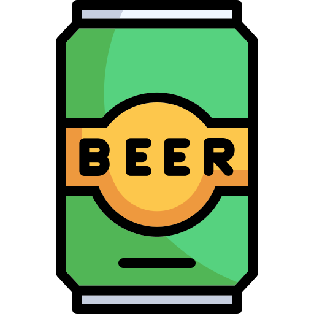

Luka Doncic
Jogador de Basquete
Luka Dončić (Ljubljana, 28 de fevereiro de 1999) é um basquetebolista esloveno que atua como ala-armador. Atualmente joga no Los Angeles Lakers, na National Basketball Association. Foi escolhido pelo Atlanta Hawks na 3ª escolha no Draft da NBA de 2018, em seguida trocado para os Dallas Mavericks por Trae Young. Em 30 de abril de 2015, com apenas 16 anos e 2 meses, estreiou na Liga ACB com a primeira equipe do Real Madrid, convertendo-se no jogador mais jovem em debutar com o Real Madrid na história. É considerado um dos jogadores mais promissores da NBA na atualidade. Em seu primeiro ano foi escolhido o Rookie of the year da liga e em 3 anos já foi selecionado duas vezes para o NBA All-Star Game e duas vezes para o primeiro time do All-NBA Team.
Hobbies
 Jogar Overwatch
Jogar Overwatch
 Beber Cerveja
 Fá #1 do Real Madrid
Fá #1 do Real Madrid
 Pai do Devin Booker
Pai do Devin Booker
Projetos Recentes
Finais da NBA: Levar o Dallas Mavericks a final da NBA.
Finais de Conferencia: Levar o Dallas Mavericks a final de Conferencia NBA duas vezes.
Scoring Title 2023-24: Maior pontuador da NBA na temporada 23-24 com 33.9 pontos por jogo.